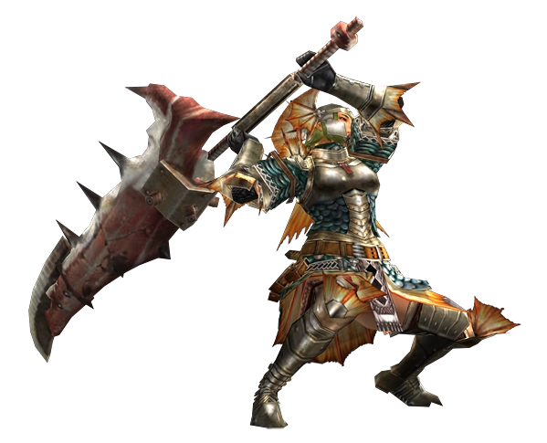
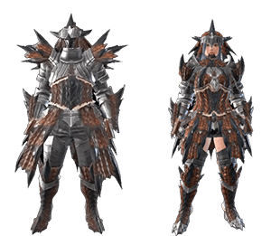

Equipment
Weapons
In order to defend themselves out in the field, hunters equip one of multiple different weapons. These weapons can range from the classic great sword, to the unusual hunting horn. Every weapons has a unique playstyle and damage type that works better against different monsters and various monster parts. Bladed weapons, like the dual blades and great sword, do slash damage. Blunt weapons, like the hammer and the hunting horn, inflict blunt damage. Ranged weapons, like the bow and light bowgun, inflict ranged damage. Weapons also come with an element or ailment, effects that can inflict various status effects onto a monster. With over a dozen choices in recent games, hunters should have no problem picking out a favorite.
List of Weapon Types
- Great Sword
- Long Sword
- Sword and Shield
- Dual Blades
- Hammer
- Hunting Horn
- Lance
- Gunlance
- Switch Axe
- Insect Glaive
- Charge Blade
- Tonfa
- Magnet Spike
- Accel Axe
- Light Bowgun
- Medium Bowgun
- Heavy Bowgun
- Bow
- More Info on Weapon Types
Weapon in Action
Below is a hunter wield a greatsword, primed to swing. Behold the tools of the trade!
Armor
Hunters can't just rely on their weapons to get the job done. After all, most of the weapons in the series have no way of defending hunters from a monster's visious attacks. That's where a hunter's armor set comes into play. Armor sets not only offer hunters defense against the monsters, but they also allow for hunters to activate different skills to give them an edge in battle. Some armor sets may give a boost to a hunter's stamina, and others even allow the hunters to sacrifice health for a massive damage boost. Recent games have even introduced a decoration system to give hunters the ability to further customize what skills they want on their equipment. Finding the proper skills for your playstyle is key for success.
